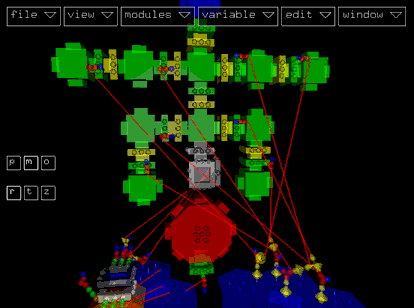
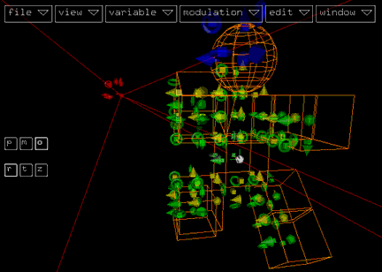
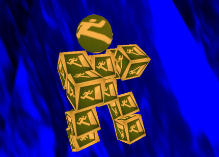

Module Mode

When you start kodisein, it is in module mode by default. This mode
lets you create new projects or load and edit the structure of existing
ones.
Editing a kodisein project includes the following tasks (which will
later be explained in detail):
You can edit every aspect of your project in module mode but it's
abstract view makes it hard to imagine the result sometimes. Therefore
you can switch to the ...
Object Mode

The (almost) WYSIWYG mode for editing the transformations
(position, size and orientation) of the objects in your scene.
Play Mode

The presentation mode. It displays the scene and lets you interactively
animate it by pressing the keys that are bound to modulator
and trigger
modules or by using the mouse.
Switching Modes
There exist several ways to switch from one mode to another:
- click one of the navigation buttons labeled 'p', 'm'
or 'o' on the left side of the screen
- select one of the menu items show modules, show
objects or start animation in the view menu
- press one of the shortcuts for the above mentioned menu items (the
default shortcuts are 'p', 'm' or 'o')
Because the menu and navigation buttons are hidden in play mode,
you have to use one of the keyboard shortcuts to get back to the object
or module mode.
Note, that the shortcut for view > start animation
also stops the play mode and returns to the previous active
mode.
>>> Modules and Connectors
|